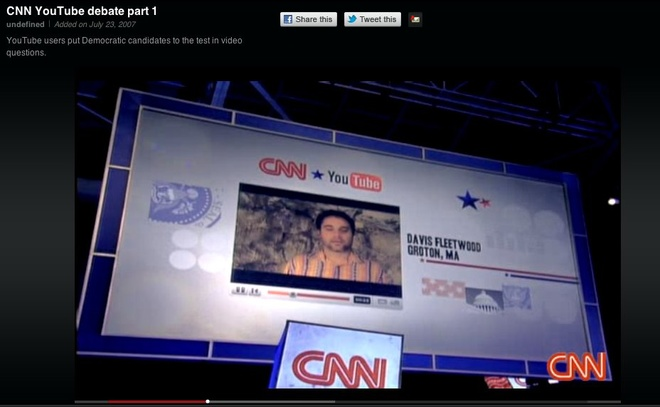

10 năm phát triển thần tốc của YouTube
YouTube đang là ông vua trong lĩnh vực video trực tuyến, với hơn 1 tỷ người dùng, chiếm gần một phần ba lượng người sử dụng Internet toàn cầu.
2/2005: Chad Hurley đăng ký nhãn hiệu, logo và tên miền YouTube đúng vào ngày Lễ Tình nhân. YouTube là ý tưởng của các cựu nhân viên PayPal - Chad Hurley, Steve Chen và Jawed Karim.
4/2005: Video đầu tiên của YouTube có tên “Tôi ở sở thú” chỉ dài 19 giây, ghi lại cảnh Jawed Karim đứng tại sở thú San Diego ngay trước chuồng voi.

5/2005: YouTube ra mắt trang thử nghiệm (beta) đầu tiên.
9/2005: YouTube cán mốc một triệu video được đăng tải. Video thứ 1 triệu là một đoạn quảng cáo của Nike, trong đó có hình ảnh ngôi sao bóng đá Brazil - Ronaldinho nhận “Đôi giày vàng”.
12/2005: YouTube chính thức ra mắt bản chạy thử sau khi nhận 3,5 triệu USD từ Sequoia Capital.
01/2006: Sau chương trình phát sóng hồi tháng 12/2005, người hâm mộ show truyền hình Saturday Night Live bắt đầu đăng tải những video bản nháp của “Lazy Sunday” lên Youtube. Một trong những video đó trở nên nổi tiếng và đạt 7 triệu lượt xem. Đài truyền hình NBC đã yêu cầu YouTube gỡ video này xuống và từ đó “Chính sách xác minh nội dung” ra đời, cho phép chủ sở hữu quyền tác giả dễ dàng phát hiện các hành vi xâm phạm.
6/2006: Chỉ vài tháng sau vụ việc, YouTube ký thỏa thuận với NBC và giúp công ty truyền thông này tiếp cận với công nghệ kỹ thuật số. Thương vụ này đánh dấu bước khởi đầu cho sự hợp tác với một vài nhà cung cấp nội dung quan trọng sau này.
10/2006: Google nhận thấy tiềm năng của YouTube và mua lại trang web chia sẻ video này với giá 1,65 tỷ USD. Khi đó, YouTube có 65 nhân viên và được mệnh danh là “bước tiếp theo trong hành trình tiến hóa Internet”.
5/2007: YouTube khởi động “Chương trình đối tác” cho phép người dùng kiếm tiền từ những video có nhiều lượt xem. Một năm sau, có những người đã kiếm được hàng trăm nghìn USD từ chương trình này.
5/2007: Một bé trai tên Charlie đã làm chao đảo cả thế giới khi video quay lại cảnh cậu bé cắn ngón tay anh trai mình trở thành một trong những video thu hút nhiều lượt xem nhất. Vào tháng 2/2012, gia đình cậu bé đã kiếm được hơn 150.000 USD từ YouTube.
7/2007:YouTube hợp tác với CNN tổ chức vòng tranh luận cho kỳ bầu cử Tổng thống năm 2008, với những video về câu hỏi của cử tri. 7 trong số 16 ứng cử viên đã sử dụng YouTube để thực hiện chiến dịch quảng bá cho mình.
8/2007: Google quyết định đã đến lúc kiếm tiền, và bắt đầu đưa quảng cáo lên YouTube. Những quảng cáo đầu tiên là những đoạn video dài khoảng 10 - 15 giây hiện lên trước khi vào video chính.
4/2009: YouTube hợp tác với Vivendi để ra mắt dịch vụ chia sẻ vide ca nhạc – Vevo. Đây là bước đi đầu tiên của YouTube trong việc xoa dịu mối quan hệ với các hãng đĩa – vốn thường phàn nàn về tình hình bản quyền trên website này.
1/2010: YouTube bắt đầu mua phim để cạnh tranh với những công ty như Netflix. Bắt đầu là một vài bộ phim đạt giải cao ở liên hoan phim Sundance, và sau đó là sản phẩm từ các hãng phim như Paramount, Disney, NBC/Universal, Sony, Warner Brothers.
4/2011: YouTube chính thức bước chân vào lĩnh vực truyền hình với sự ra mắt của YouTube Live, cho phép truyền hình trực tiếp mọi sự kiện, từ các buổi hòa nhạc cho tới đám cưới hoàng gia hay giải đấu Olympics.
12/2012: Gangnam Style đạt 1 tỷ lượt xem chỉ trong 5 tháng. Video ca nhạc này hiện nắm giữ 2,4 tỷ lượt xem.
1/2013: YouTube mở 3 phòng thu với tên gọi “YouTube Spaces” ở Los Angeles, Tokyo và New York.
3/2013: YouTube cán mốc 1 tỷ người dùng.
2/2014: Nửa người dùng YouTube hiện truy cập qua thiết bị di động. Doanh thu từ mảng di động của website này cũng tăng gấp đôi so với năm ngoái.
8/2015: Google tung ra “YouTube Gaming”, cho phép game thủ chơi và tương tác trực tuyến với khán giả. Dịch vụ này nhằm cạnh tranh với Twitch của Amazon, chương trình đang thống trị trên thị trường hiện nay.
Hà Tường (theo BI)